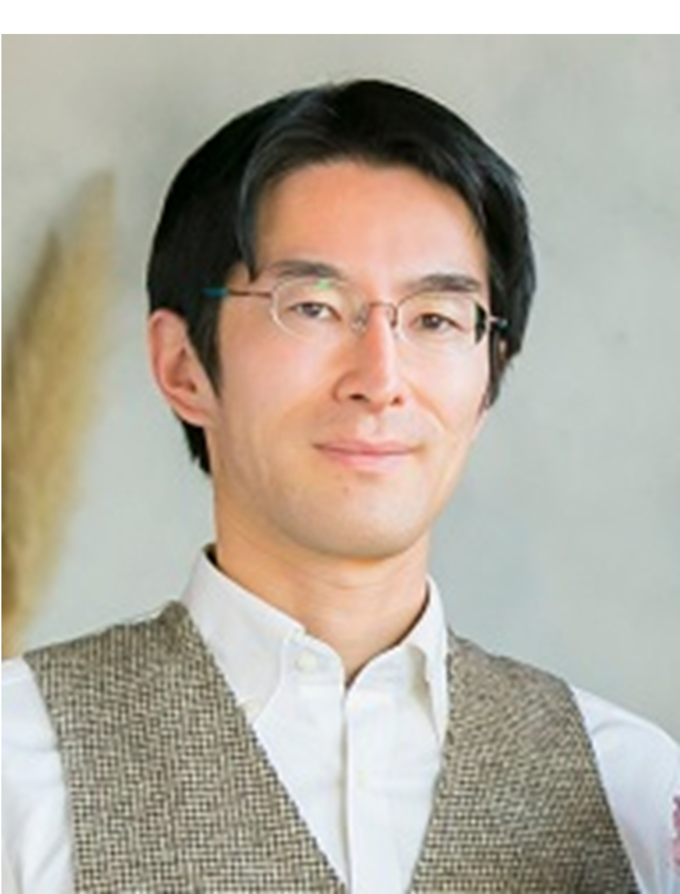
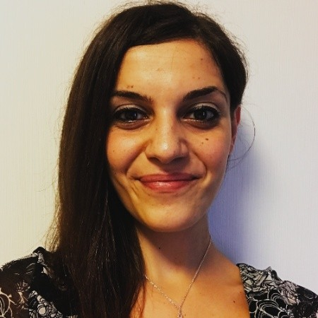
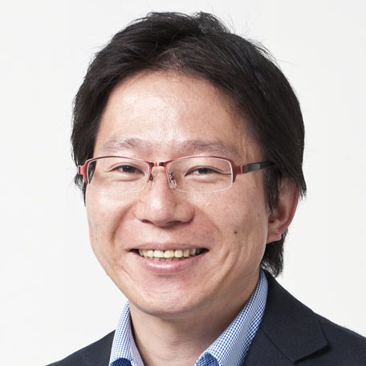
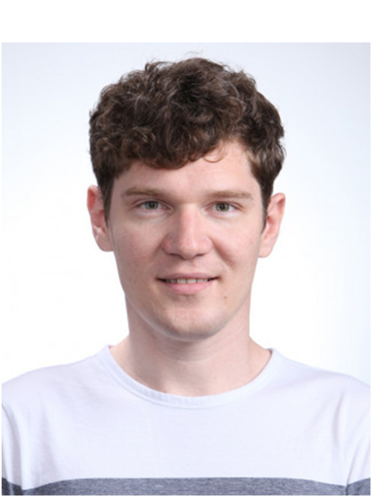
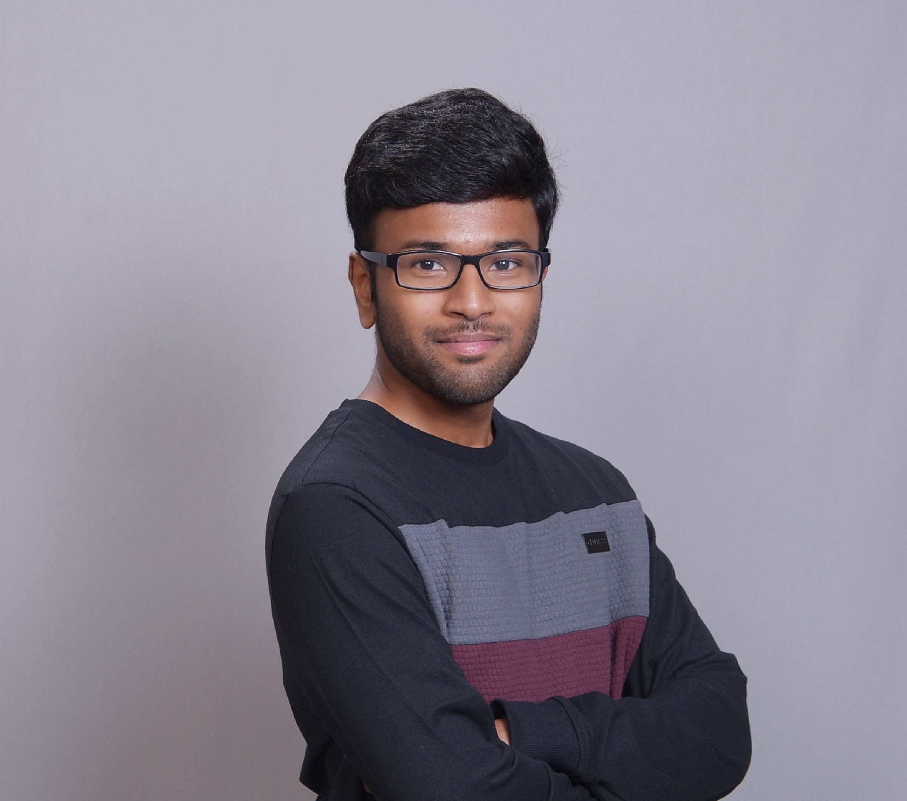
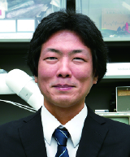
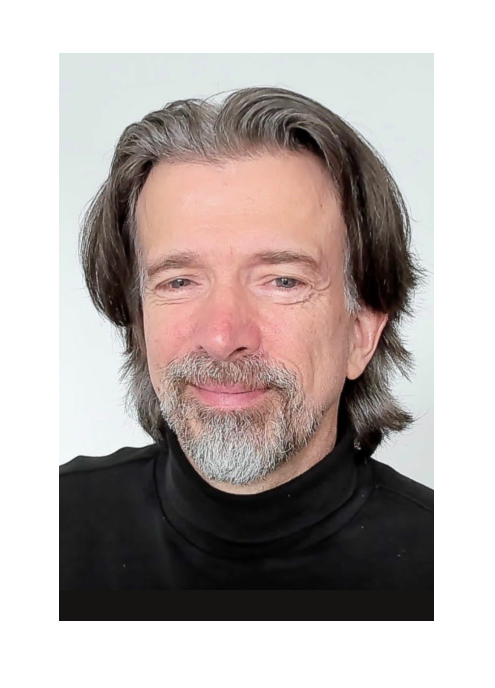
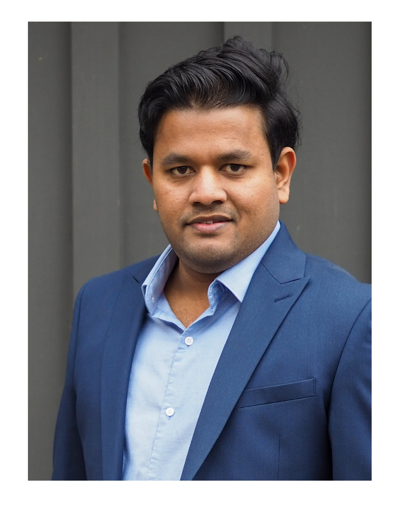

Physical interaction is one of the most dependable and common methods
for understanding the physical properties of soft objects. In the
medical domain and Minimally Invasive Surgery (MIS), the fundamental
diagnosis technique known as palpation, was a staple in first line of
examinations to identify stiff tissues and hard masses. Branching
further into the agricultural field, assessing the stiffness of fruits
allows farmers and machines to determine the quality of the produce and
their readiness for consumption. Today, with rapid advancements in the
field of soft robotics, soft haptics for teleoperation, agrifood systems,
and industrial automation, there is growing interest in replicating this
human ability to sense stiffness in robots. The stiffness perception of
soft matter is essential for developing robotic systems that can
interact safely, adaptively, and intelligently with soft objects in
their environment. This workshop aims to unite researchers and
practitioners from multiple disciplines to share insights on sensing the
stiffness of soft matter and its significance in enabling safer robotic
interactions. Furthermore, this workshop also aims to explore a
psychophysical perspective for improving soft matter perception in
robots. Through talks, discussions, and collaborative sessions,
participants will explore the current state of stiffness sensing
technologies, their practical applications, and the challenges that
remain in understanding and modelling tactile perception.
Objectives:
• Distinguish between tactile sensing and stiffness sensing and
understand how these concepts are interrelated.
• Explain how tactile sensing mechanisms can be applied to measure
stiffness across different materials and environments.
• Understand how humans perceive stiffness through touch, and how these
mechanical, psychological, and neurological mechanisms can inspire the
design of robotic stiffness sensors.
• Examine diverse applications of stiffness sensing, including its use
in medicine, agriculture, material identification, robotic manipulation,
etc.
• Discuss the role of stiffness perception in enhancing human and robot
performance in teleoperation, virtual training, simulation systems, etc.
• Integrate interdisciplinary perspectives to propose future directions
for research in robotic perception and human-machine interaction.

Tokyo Metropolitan University
Ben Gurion University of the Negev
European Space Agency
Boston University College of Engineering
Kyushu University

FingerVision Inc.

Tohoku University
University of Cambridge

Queen Mary University of London
University of Canberra

Queen Mary University of London
Queen Mary University of London
Imperial College London
University of Cambridge

Kindai University

Queen Mary University of London

Queen Mary University of London
| Time | Details |
|---|---|
| 09:00–09:10 |
Opening Remarks Thilina Lalitharatne |
| 09:10–10:10 |
Session 1: Expert Presentations (10 min + 2 min Q&A each) |
| 09:10–09:22 | Shogo Okamoto - "How Humans Perceive Softness Through Touch, Differently from the Mechanical Definition of Stiffness" |
| 09:22–09:34 | Arsen Abdulali - "Overcoming Tradeoffs in Modeling Soft Objects" |
| 09:34–09:46 | Sanjaya Bandara - "Optical Assessment of Tissue Properties: From Muscle Measurement to Mechanical Characterization" |
| 09:46–09:58 | Angela Faragasso - “Seeing Touch: Perceiving Material Properties Through Vision-Based Tactile Sensing” |
| 09:58–10:10 | Leone Costi - “Soft Physical Twins for Remote Palpation” |
| 10:10–10:25 |
Lightning Talks (5 speakers, 2 min each) |
| 10:10–10:12 | Juliette Hars - "HOOKED - Soft, Conformable, Crocheted Sensing Garment: Programmable Capacitive Arrays for Force Estimation" |
| 10:12–10:14 | Benhui Dai - "Bio-inspired Soft Robotics & Electronics for Real-world Unstructured Scenarios" |
| 10:14–10:16 | Christos Vasileios Lousis - "Bioinspired Passive Stiffening for Soft Actuator in MIS" |
| 10:16–10:18 | Yongzhang Zhu - "Hybrid Positive-Negative Pressure Tunable Soft Tactile Sensor" |
| 10:18–10:20 | Hashir Hamid - "Development of a Soft Stiffness-Controllable Vision-Based Force Sensing Probe" |
| 10:25–10:55 | Coffee Break, Poster Presentations, and Voting |
| 10:55–11:55 |
Session 2: Expert Presentations (10 min + 2 min Q&A each) |
| 10:55–11:07 | Masashi Konyo - "Rendering Softness via Contact Surface Stimulation by Linking Physical Simulation and a Tactile Display" |
| 11:07–11:19 | Xing Wang - "Automated grasping pipeline with grasping pose estimation and soft robotics in a harsh agricultural environment" |
| 11:19–11:31 | Chapa Sirithunge - "The Politics of softness: Who controls touch, force and perception?" |
| 11:31–11:43 | Ilana Nisky - "The Dynamics of Soft Touch: Perception and Action with Compliant Virtual Objects" |
| 11:43–11:55 | Sheila Russo - “Feeling Without Touch: Soft Optical Sensors for Perception in Compliant Environments” |
| 11:55–12:20 |
Panel Discussion and Q&A (All Speakers) |
| 12:20–12:30 | Award Ceremony and Closing Remarks |
We invite students and early-stage researchers to submit a poster in
our areas of interest. The selected posters will be invited for a
5-minute lightning talk during the workshop, offering an
opportunity to get in touch with leading experts in their field. The
areas of interest are (but not limited to):
• Soft tactile sensors
• Soft stiffness sensors
• Tactile and stiffness sensing in Minimally Invasive Surgery (MIS) and
medical robots
• Stiffness and tactile sensing in food handling and manipulations
• Psychophysics and human perception of softness/stiffness
• Material models for soft matter
• Contact mechanics, indentation, and probing strategies for soft
materials
• Calibration and benchmarking for softness/stiffness sensing
• Stiffness sensing in human-robot interactions
Submission Details
• Submission Deadline: Closed
• Poster format: vertical A0 size
• Please use the 'Submit Poster' tab below to submit your poster.
• File size limit 10MB
• Only PDF format
Please submit the poster using the format
"Name_Surname.pdf". Don’t miss this opportunity to share
your research at our workshop and engage in discussions with experts in
the field!
🏆 The two best posters will receive a prize of $100 each!
The workshop will take place from 9:00 AM – 12:30 PM (with a coffee break) at Hotel Kanazawa.
Address: 1-1 Horikawashinmachi, Kanazawa, Ishikawa 920-0849 Japan.
For inquiries, please contact Saitarun Nadipineni via s.nadipineni@qmul.ac.uk.